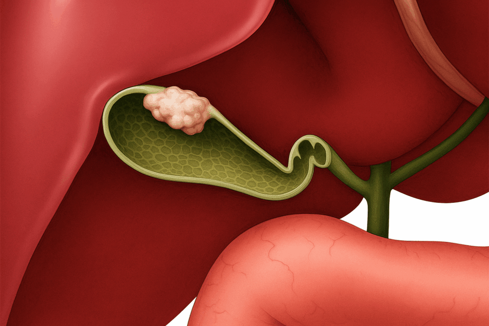
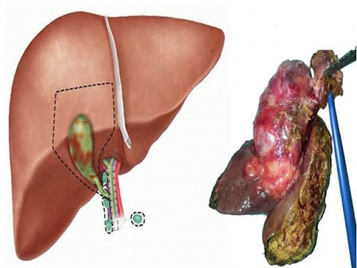

Gallbladder cancer is a rare but serious disease that begins in the gallbladder — a small, pear-shaped organ located beneath your liver. The gallbladder’s main job is to store bile, a fluid that helps digest fats.
Why Early Detection Is Challenging

Gallbladder cancer often doesn’t cause clear symptoms in its early stages. When symptoms do appear, they can be mistaken for other digestive issues, such as gallstones or infections. This can delay diagnosis and treatment.
At the cellular level, cancer develops when normal cells lose their control signals, multiply uncontrollably, and form a lump or mass. These abnormal cells can invade nearby tissues and spread to other organs — a process called metastasis.
Common Symptoms
While having these symptoms does not always mean cancer, it’s important to discuss them with your healthcare provider if they persist:
- Persistent abdominal pain in the right upper quadrant (often dull)
- Jaundice (yellowing of the skin or eyes)
- Nausea or vomiting
- Loss of appetite and unexplained weight loss
- Fever or general fatigue
In some cases, symptoms occur when the tumor presses on the bile duct or liver.
What has been found to be associated with gall bladder cancer?
Certain factors may increase the risk of gallbladder cancer, including:
- Gallstones — especially large stones present for many years that can damage the gallbladder wall
- Chronic gallbladder inflammation
- Typhoid can persist in asymptomatic long-term carriers.
- Being female (women are affected more often than men in India)
- Older age (most cases occur in people over 65)
- Family history of gallbladder disease
- Certain ethnic or geographic populations (Native American, Hispanic, and some Indian regions)
How It’s Diagnosed
If gallbladder cancer is suspected, your doctor may recommend:
- Ultrasound — first-line imaging to detect abnormalities
- CT scan or MRI — to assess wall thickening, unhealthy appearance, or lumps, and to check if nearby lymph nodes or the liver are involved
- Blood tests — to evaluate liver function
- Biopsy — to confirm the presence of cancer cells
No imaging test (CT, MRI, PET) is 100% accurate in differentiating between cancerous and non-cancerous thickening. This is why, in some instances, surgical removal of the gallbladder is advised for confirmation.
If facilities are available, the removed gallbladder can be examined during surgery via a frozen section test. If cancer is confirmed, the surgeon may remove part of the liver and surrounding lymph nodes as part of definitive treatment.
Treatment Options
Treatment depends on the stage of the disease and overall health:
- Surgery — Primary treatment for early-stage disease. This may include removal of the gallbladder, part of the liver, and nearby lymph nodes. For gallbladder cancer that has not spread beyond the gallbladder and nearby tissues, surgery offers the best chance for cure. The standard procedure for most patients with resectable disease beyond very early stage is a radical cholecystectomy.
What Does a Radical Cholecystectomy Include?

- Removal of the gallbladder
- Liver resection — The surgeon removes part of the liver where the gallbladder is attached, usually:
- Segments IVb and V (about 2–3 cm depth of liver tissue)
- This ensures removal of any microscopic cancer spread into the liver bed.
- Lymph node removal (lymphadenectomy) —
- Nodes in the hepatoduodenal ligament (around the bile duct, hepatic artery, and portal vein) are removed.
- Guidelines recommend at least 6 lymph nodes be retrieved for accurate staging.
- Bile duct removal —
- Not routinely performed.
- Done only if cancer directly invades the bile duct or is too close to achieve a safe margin without removal.
- Chemotherapy —. Chemotherapy uses medicines to kill cancer cells or stop them from growing. In gallbladder cancer, it is used in different settings:
Adjuvant Chemotherapy (After Surgery) – Given for 3–6 months after radical cholecystectomy (stage II or higher, or with high-risk features) to kill hidden cancer cells and lower recurrence risk. Standard is capecitabine for 6 months (BILCAP trial); gemcitabine + cisplatin may be used if not suitable.
Neoadjuvant Chemotherapy (Before Surgery) – Used in selected borderline or locally advanced cases to shrink the tumor and make surgery possible. Common regimens include gemcitabine + cisplatin.
Sometimes, gallbladder cancer is discovered unexpectedly after surgery for gallstones. If it’s detected early, no further treatment may be needed. If more advanced, a second surgery may be recommended.
Incidental Gallbladder Cancer (IGBC): What You Should Know
What is Incidental Gallbladder Cancer?
Incidental Gallbladder Cancer (IGBC) is gallbladder cancer that is discovered unexpectedly—usually after a gallbladder removal surgery (cholecystectomy) that was performed for another reason, such as gallstones or inflammation (cholecystitis).
The diagnosis is often made when the removed gallbladder is examined under a microscope by a pathologist.
Why does it happen?
Gallbladder cancer is uncommon, and in its early stages, it rarely causes symptoms different from gallstones.
Because of this, cancer may go unnoticed until surgery is done for what seems like a benign problem.
Risk factors include:
- Long-standing gallstones
- Gallbladder polyps (especially >1 cm)
- Chronic gallbladder inflammation (porcelain gallbladder)
- Certain genetic and environmental factors
What happens after the diagnosis?
If IGBC is detected, your doctor will review:
- Stage of cancer (how deep it has invaded the gallbladder wall and whether it has spread)
- Margins (whether cancer cells are present at the edge of the removed tissue)
- Lymph node status (if available)
Further treatment may include:
- Additional surgery (radical cholecystectomy with liver wedge resection and lymph node removal) – often advised if the cancer is stage T1b or higher.
- Imaging scans (CT/MRI) to check for spread.
- Oncology referral for chemotherapy if the disease is advanced or surgery is not possible.
Why is timely action important?
Gallbladder cancer can spread quickly to the liver and surrounding areas.
If IGBC is detected early and treated appropriately, the chances of long-term survival improve significantly.
Delaying evaluation or treatment can allow the disease to progress, limiting treatment options.
Key Takeaways for Patients
- IGBC is often found unexpectedly after gallbladder surgery.
- Early-stage IGBC can often be treated successfully with timely surgery.
- Always review your gallbladder histopathology report after surgery.
- If IGBC is reported, consult a hepatobiliary or gastrointestinal cancer surgeon promptly.
Living With and Beyond Gallbladder Cancer
A gallbladder cancer diagnosis can feel overwhelming, but advances in surgical techniques, chemotherapy, and supportive care have improved outcomes. Early detection, timely surgery, and close follow-up care remain key to improving survival and quality of life.
Have a question this article does not answer?
Send us your reports. A specialist reviews them before you travel, so the first visit begins with a plan rather than a repeat test.